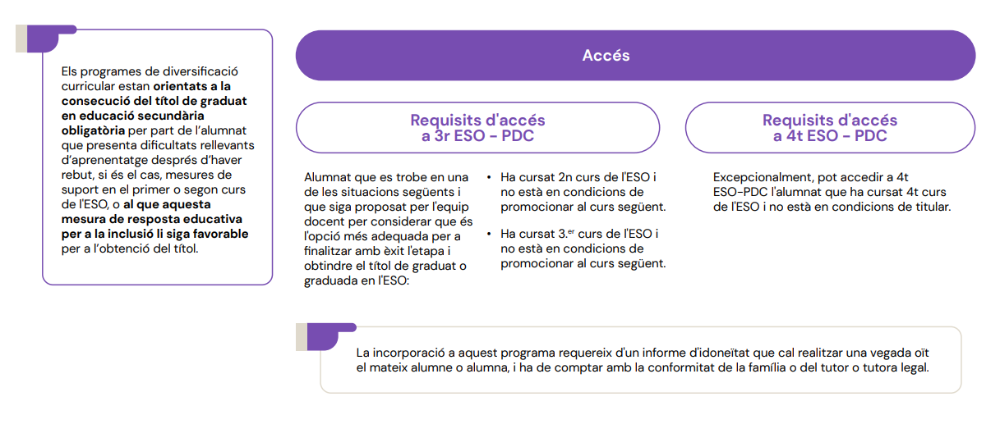
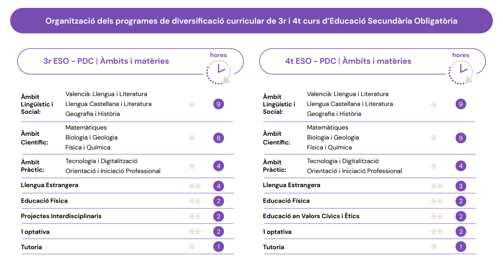

📚 Què és el PDC?
A continuació trobaràs les condicions per a accedir als dos cursos del
Programa de Diversificació Curricular (PDC).
Una vegada acabat el PDC, l’alumnat obté el
títol de Graduat en Educació Secundària Obligatòria (ESO).
Per a incorporar-se al programa és necessari que l’alumnat
siga proposat per l’equip docent.
🎯 A qui està dirigit?
Els programes de diversificació curricular estan orientats a la
consecució del títol de l’ESO per part de l’alumnat que:
- 📘 Presenta dificultats rellevants d’aprenentatge.
- 📚 Ha rebut mesures de suport en 1r o 2n d’ESO.
- 🧭 Pot beneficiar-se d’aquesta mesura d’atenció a la diversitat per obtindre el títol.
ℹ️ Més informació


Si tens dubtes, consulta amb el teu
tutor o tutora o amb el
Departament d’Orientació.